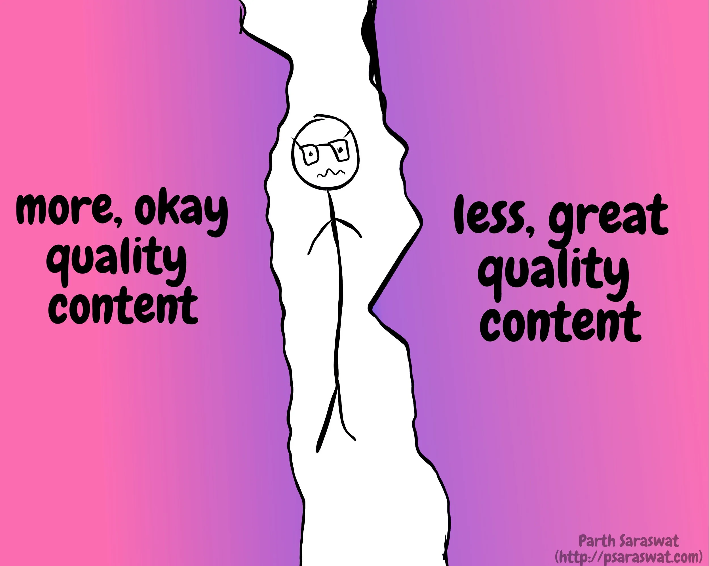
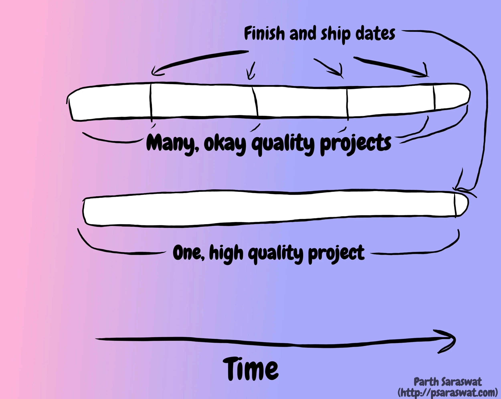
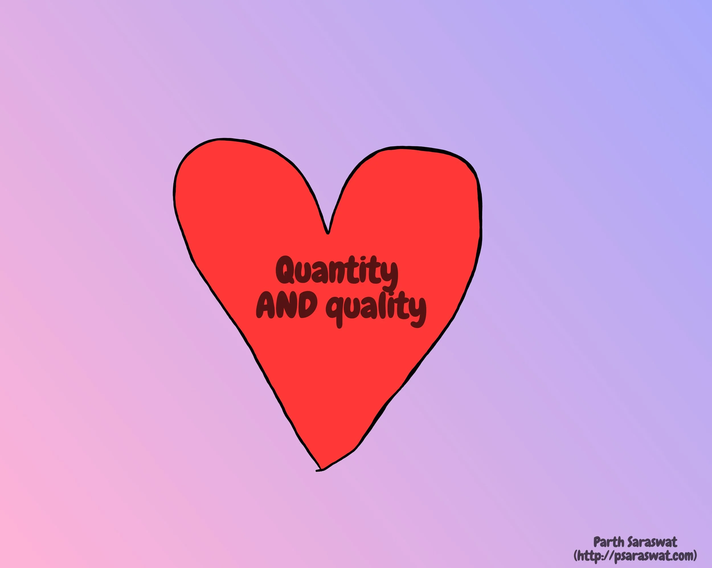

Quantity vs Quality
I’ve been making content online for almost all of my adult life. I started when I was 14/15 and I’m still trying my hand at it. Eventually, the classic quantity vs quality question was bound to come up.
The classic, copout answer to this question is simple (and, I repeat, a copout): you need both! You need a balance! This is obvious, but I wanted to take a deeper dive at my personal situation and find an answer that works for me right now.
I believe there is an actual winner. This (short) post is all about why I choose to prioritise quantity in the short term while prioritising quality in the long run.
There are obvious arguments for both. There are success stories for creators who have focused on quantity (see: KhanAcademy, 5minCrafts, etc), and there are successful creators who have focused on quality (Kurzgesagt, CGP Grey, etc).
There is no question that both these approaches work and have their advantages. Let’s take a closer look at the advantages of focusing on quantity.

The more stuff you put out there, the more feedback you get, the more opportunities you have to improve your work. You also start generating a catalog of work. Quantity also gives you more opportunities to make things, which gives you more chance for practice. If I had focused the past 7 months on writing one big, grand blog post, there would be no chance of practice. It’s just constantly trying to get the best out of one piece of work. At the end of the day, you might not even end up putting the piece out there because it doesn’t ‘hold up to your expectations’. Isn’t it better, then, to focus your energy on making many imperfect things? Does shipping beat perfection?

On the other hand, quality has its own pros. If you create something extraordinary, there is a much higher chance that you’ll catch a ‘big break’, whatever that is. Your video/blog/podcast/music might go viral, suddenly garnering attention and critical acclaim.
The question is, which pros do you choose?
If I consider my particular situation, I am a beginner or enthusiast at everything that I do. My music skills are nascent, I haven’t had any real practice with video production, the podcast I launched earlier this year is my first step into the world of audio. At this ‘beginner’ stage, focusing on quantity will benefit me a lot more than focusing on quality. There is a reason why Frndship Time episodes are weekly. There is a reason why these blog posts (ideally) come out every week.
At this point, focusing on quality makes no sense. I simply do not possess the skills to make something extraordinary. Only with more creation, more practice, and more experience can I begin to pour my resources into focusing on quality. More practice and feedback also guarantee that I will get better at these skills.

I am not blind to the advantages of focusing on quality, though. The satisfaction and long term reward of creating something of the highest possible quality are unquestionable. The question then, is this: is there an approach that will allow me to get the best of both worlds? I’m glad you asked (you didn’t ask… but here’s what I think anyway)!
For the past few weeks, I’ve been focusing on creating regular, ‘decent’ quality content while also working on a couple of ‘high quality’ projects in the background.
For example, when it comes to content creation, Frndship Time and this blog are regular bits of content. I also (try to) make some new music every week. At the same time, I’ve been working on slightly more ambitious projects in the background. This allows me to reap the benefits of constant, quantity focused content creation while also being able to make quality focused content without the pressure that comes with just focusing on one project at a time.
Here’s the takeaway: when it comes to the quantity vs quality debate, just like anything else, there is no answer, only tradeoffs. You make a decision based on your current situation and priorities. Right now, I’m leaning towards quantity, but quality is always in my peripheral vision.
See you next week for a new post.
Thanks for reading! You can always email me to chat about this post - or anything else.
As is true for any advice or counsel you ever receive: Y.M.M.V! Your mileage may vary. Some advice can be a vice. Feel free to take what you can use, and leave the rest. There are no rules.